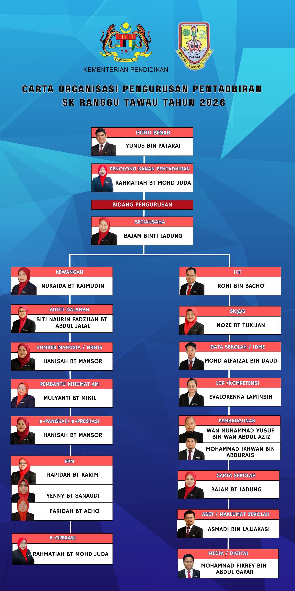

GURU BESAR
Yunus bin Patarai
Ketua pengurusan sekolah

 SK RANGGU • ORGANISASI 2026Struktur pengurusan rasmi sekolah
SK RANGGU • ORGANISASI 2026Struktur pengurusan rasmi sekolah
Rujukan rasmi empat bidang pengurusan Sekolah Kebangsaan Ranggu: Pentadbiran, Kurikulum, Hal Ehwal Murid dan Kokurikulum.
Nama dan gambar berdasarkan carta rasmi sekolah tahun 2026.
Ketua pengurusan sekolah
Pengurusan pentadbiran
Pengurusan kokurikulum
Hal ehwal murid
Pengurusan sesi petang
Penyelarasan sukan sekolah
Bidang pengurusan pentadbiran SK Ranggu tahun 2026.
